- Click this link to visit Lorand's GearSwap page on GitHub.
- 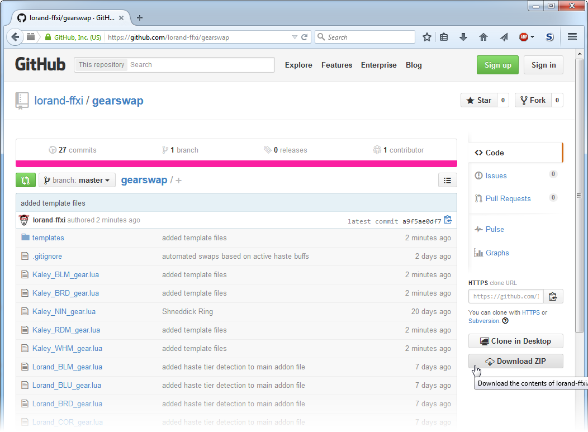
On the right side, click the "Download ZIP" button to download all of the GearSwap files.
- 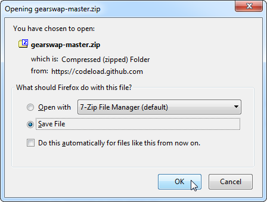
Click "Save File".
- 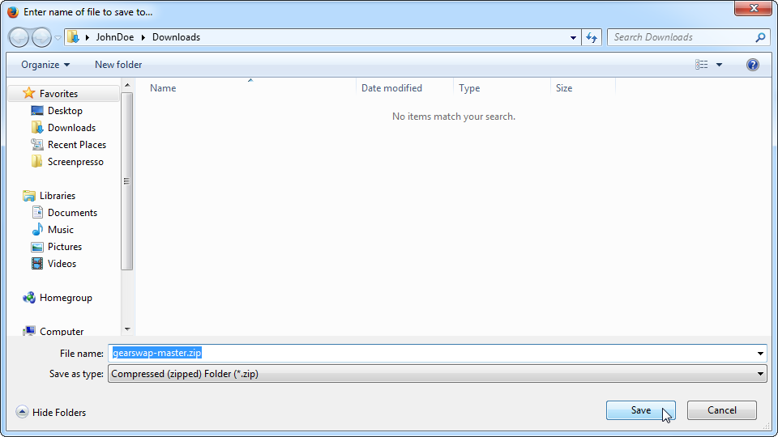
Choose a location to save the file, then click "Save".
- 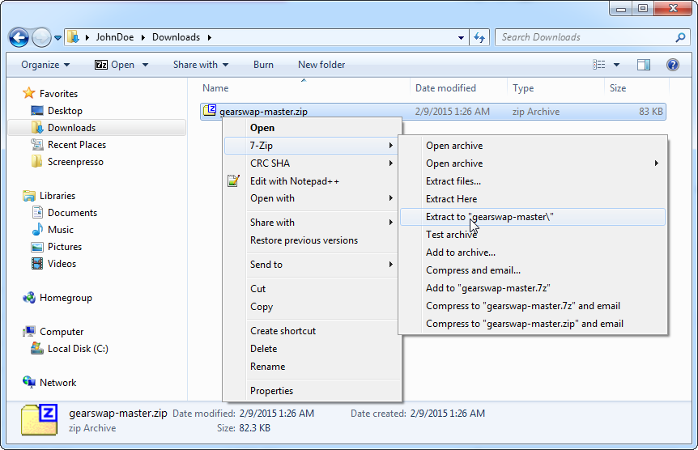
Navigate to the location where the file was saved, then right-click and extract the contents of the file.
- 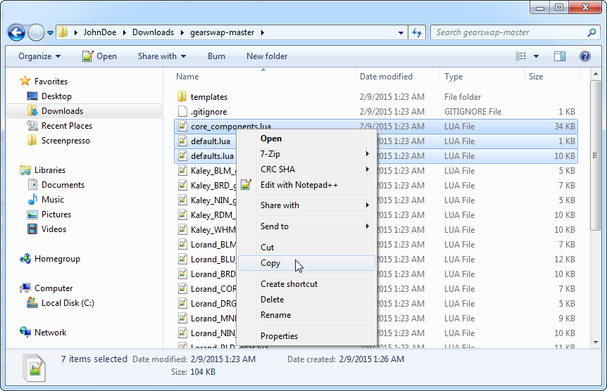
Open the file, and select (hold down the [ctrl] key to select multiple files at once) core_components.lua, default.lua, defaults.lua, mappings.lua, set_operations.lua, spell_utilities.lua, and utility_functions.lua. Right-click one of the selected files, and click "Copy".
- 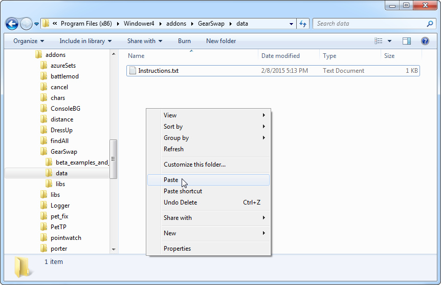
Navigate to the folder where Windower is installed, then to the addons/GearSwap/data folder. Paste the files into this folder.
- 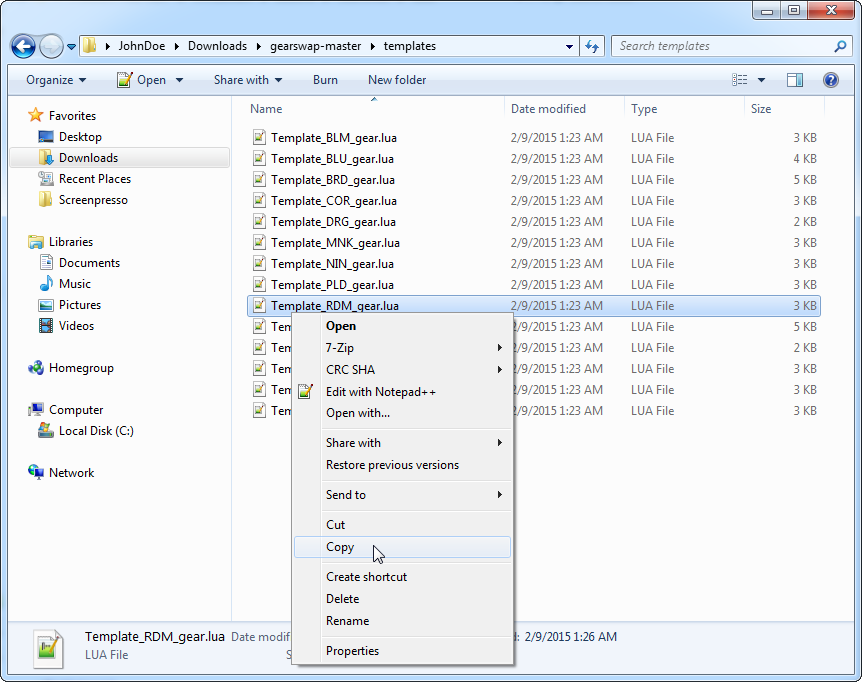
Go back to the folder that we copied those files from, and open the Templates folder. Select one or more files to copy.
- 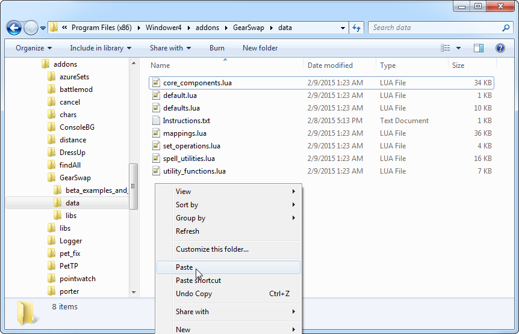
Paste them in the same folder as the other files that we pasted.
- 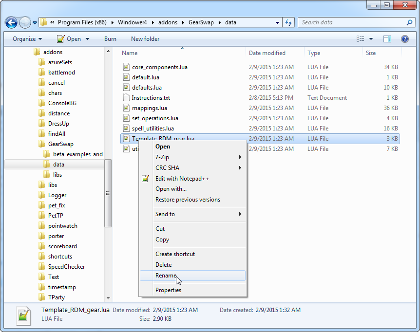
Rename the template file to include your character's name instead of "Template".
- 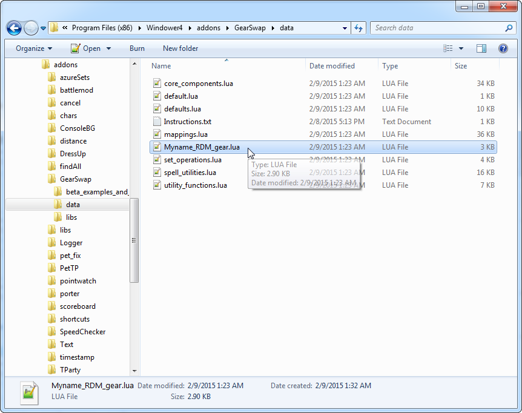
Double-click the file to open it.
- 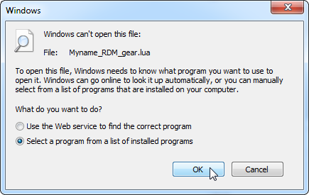
A dialogue may come up because Windows doesn't recognize the file type. Click "Select a program from a list of installed programs", then click "OK".
- 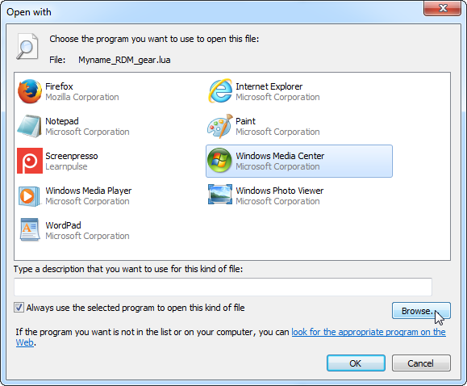
If Notepad++ is not in the list provided, click "Browse...". (If you do not have Notepad++ installed, I highly recommend that you download and install it from
here)
- 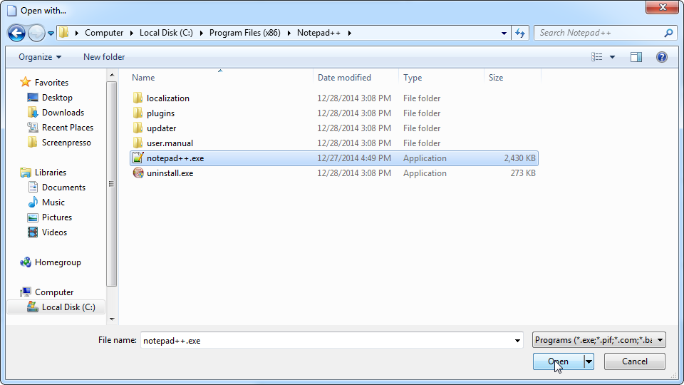
Navigate to the folder where Notepad++ is installed (usually C:\Program Files (x86)\Notepad++\), click notepad++.exe, and then click "Open".
- 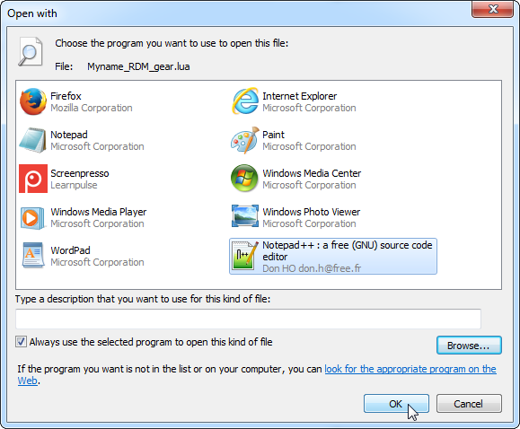
Click "OK".
- 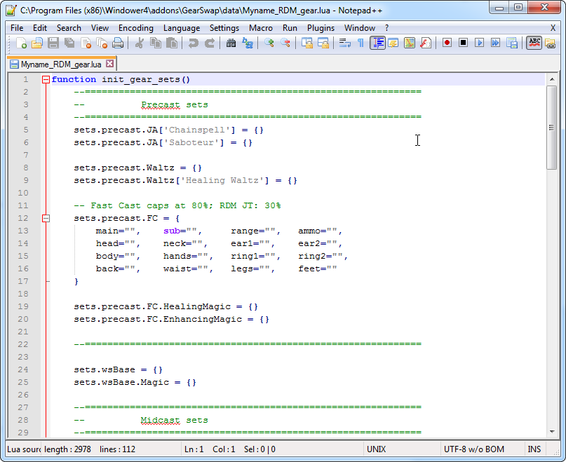
The file will open, and you can now edit it.
- When you log in to FFXI, or if you're already logged in and type "//gs reload", the {character name}_{job}_gear.lua file will be loaded.